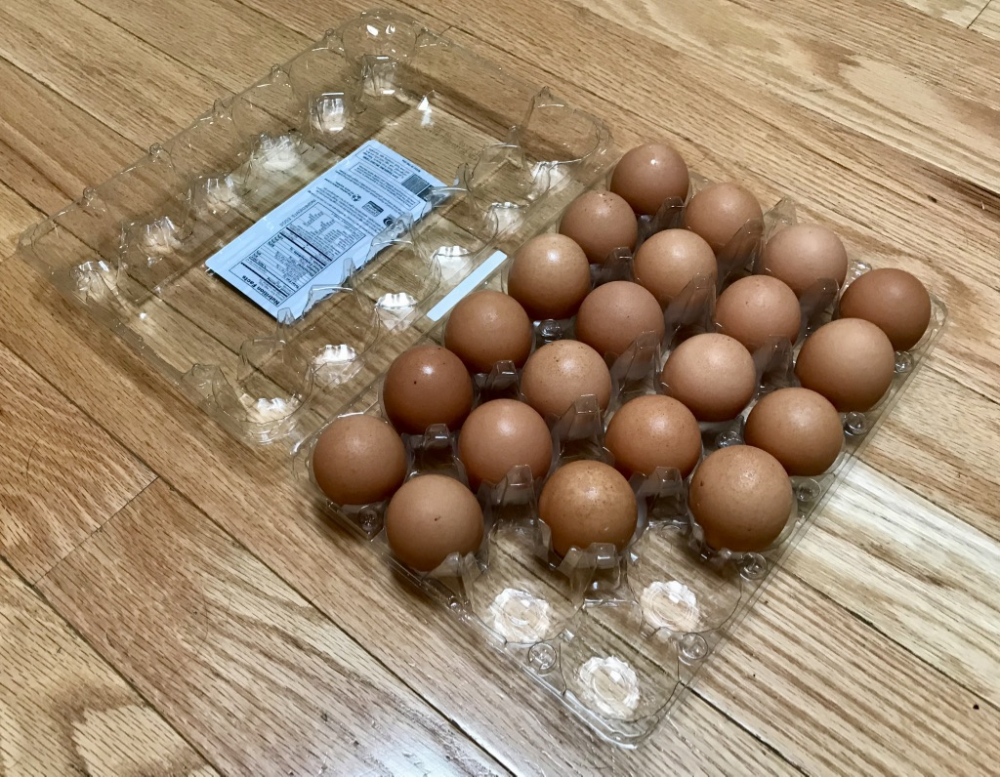
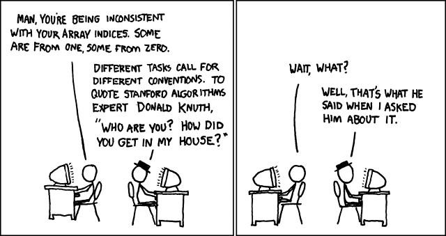
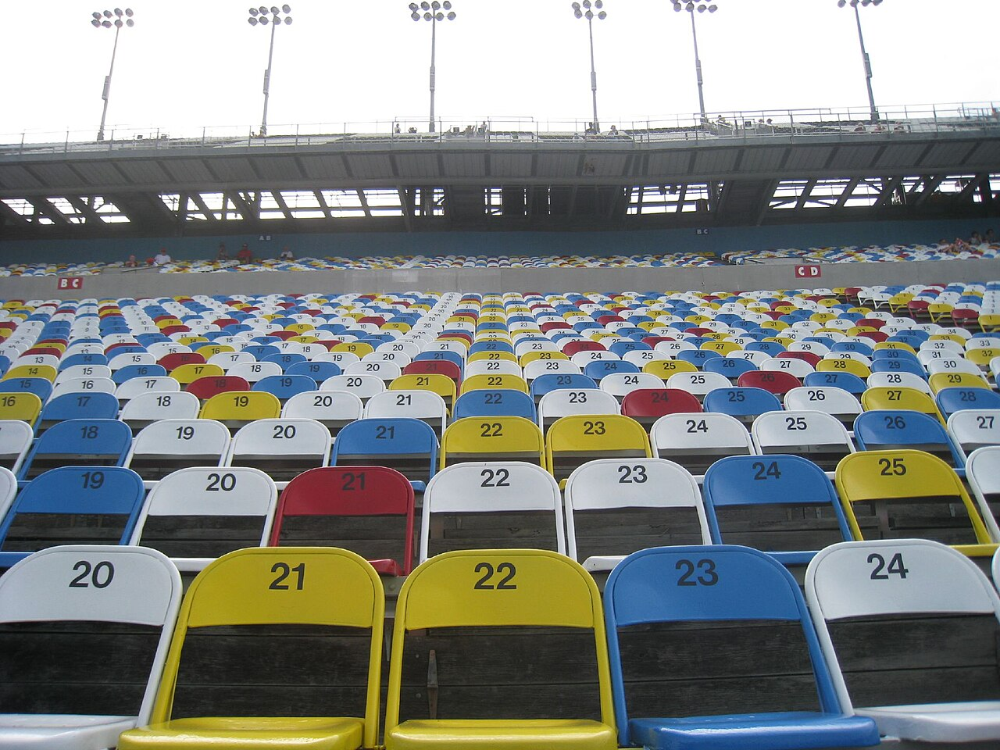
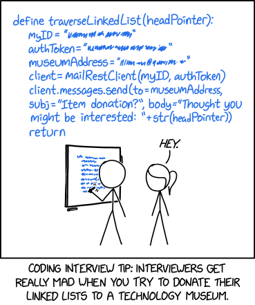
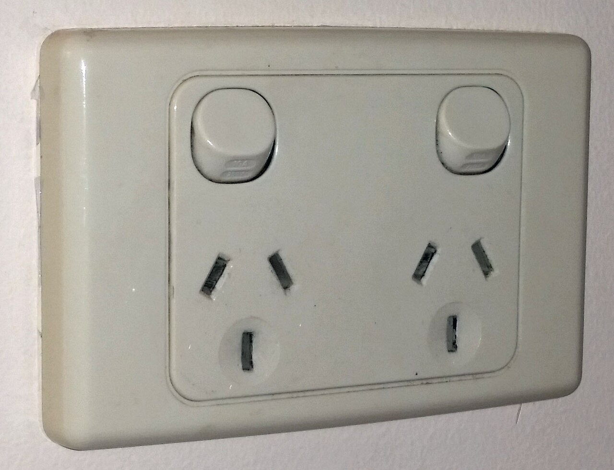
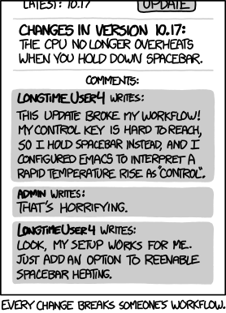

Lists and Generics
Replace fixed-size arrays with collections, compare ArrayList and LinkedList, distinguish positions from values, and use type parameters to reuse code without giving up type checking.
The lecture, then the practice
Choose a section, or use the arrow keys in the section list. Hover or tap an underlined part of a program for its explanation. Run it, then use Edit to test a prediction of your own.
01ArrayList and Python lists
1.1A sequence that grows
An array has a fixed length. An ArrayList manages a backing array and its capacity for you, so adding an element does not require you to allocate a replacement yourself. size() is the number of stored elements; capacity is internal storage, not a set of elements you can already access.

size(): the elements actually in the list, at indexes 0 to 20 — an empty cup is not an element, so get(21) fails even though there is room. When a 25th egg arrives, ArrayList fetches a bigger carton and moves every egg across for you; with a plain array you would have to do that yourself. Photo: Rlsheehan, 2018 · CC BY-SA 4.01.2Insert, replace and inspect
Use add(value) to append, add(index,value) to insert and set(index,value) to replace. Valid access indices run from 0 through size−1. Insertion also permits size, which appends. Python uses append, insert and bracket assignment for the corresponding jobs.
add(i, x): the new element takes index i and every later element's index goes up by one. Swapping one book for another moves nothing else — that is set(i, x). You can only take down a book that is there (positions 0 to size()−1), but you may add one at position size(), the very end. Where it breaks: you shove a row of books in one push, but the list moves each element separately, so inserting near the front of a long list is real work. Photo: Roman Eisele, 2020 · CC BY-SA 4.0Watch the indexes: add, insert, set, remove
Press Next to run one line at a time, in Java and Python together. The highlighted line is the one that has just run. The small numbers under the boxes are indexes. They belong to the positions, not to the values, so watch which values move when something is inserted or removed.
This interactive diagram needs JavaScript.

0, so the last index is the size minus 1. Mixing 0 and 1 is how off-by-one bugs start.xkcd 163, Donald Knuth (2006) — Randall Munroe, CC BY-NC 2.5- Insert at index 1 and shift the later elements right.
- Replace an existing element; the list size stays unchanged.
- Insert rather than overwrite the existing index.
- Replace one list element.
Insert at the current size, then try get(size) in Java. Explain why the first operation is valid and the second is outside the list.
02Removal and safe traversal
ArrayList<Integer>, remove(1) means “the seat at position 1”, while remove(Integer.valueOf(211)) means “the seat with 211 painted on it”, wherever it is. Java chooses between them from the argument's type: a plain int is a position, an Integer is a value. Photo: Yann Duarte from Vitória, Brasil, 2010 · CC BY 2.02.1Overloading can change meaning
On ArrayList<Integer>, remove(1) removes index 1; remove(Integer.valueOf(1)) removes the first value equal to 1. The argument type decides the overload. A value removal that finds no match returns false; a position outside the list is an error.
2.2Do not shift the ground under your loop
Removing from a list while an enhanced for-loop is traversing it can invalidate the traversal. Use an Iterator and its remove method, iterate indices backwards, or create a filtered result. The Python example creates a new list, so repeated adjacent rejected values are handled correctly.

Removing while you loop: find the skipped value
The goal is to remove every even number from [1, 2, 2, 3, 4]. Pick a version, then step through it. The arrow above the boxes is the loop variable, and the highlighted line is the one that has just run.
This interactive diagram needs JavaScript.
- The int argument selects the index overload, removing the element 1 at index 1.
- Pass an Integer object to select removal by value.
- Keep only odd values.
- The comprehension builds a new list instead of editing the list being traversed.
Change the Java values to [1,4,1]. Predict both removals. In Python, explain why two adjacent even values are both removed by the comprehension.
03Linked nodes and queues
i in a LinkedList means walking. Once you are standing at the right clue, adding a new one only means rewriting one note — nothing else has to shift. Where it breaks: Java's LinkedList nodes also point back to the previous node, so it can be walked from either end. Photo: Personal Creations, 2014 · CC BY 2.03.1Follow links instead of shifting values
A linked list stores nodes with links between them. Java LinkedList is doubly linked. Adding or removing at an end does not shift a backing array, but reaching the node at an arbitrary index still requires traversal. A fast unlink after finding a node does not make every remove(index) constant time.
3.2Choose from the access pattern
ArrayList is a sound default for indexed access and ordinary traversal. LinkedList offers operations at both ends. Repeated get(i) in a loop can make a linked-list traversal quadratic; an enhanced for-loop visits it sequentially. For a Python FIFO queue, collections.deque avoids repeatedly shifting the front of a list.
collections.deque suits it. Taking the first element out of an ArrayList or Python list is like making everyone in this line step forward one place each time the bus takes a passenger. Where it breaks: in a real line people do step forward; in a deque or linked list nothing moves — only the record of who is at the front changes. Photo: Grand Canyon NPS, 2023 · public domainA queue made of linked nodes
Each node holds a value and a link, next, to the node behind it. head is the front of the queue and tail is the back. Press Enqueue or Dequeue, then press Next to step through the method one line at a time and watch the links change. The code is from the complete programs below.
This interactive diagram needs JavaScript.

- Add to the tail of the queue.
- Remove and return the head, giving first-in-first-out service.
- Use the standard double-ended queue for efficient operations at either end.
- Remove the leftmost, oldest entry.
- The link: a reference to the node behind this one, or
nullfor the last node. - The front of the queue: the next node to leave.
- The back of the queue. Keeping it means
enqueuenever has to walk along the whole chain. - Link the old back node to the new one. No value moves anywhere.
- Move the front along by one node. Nothing refers to the old front any more, so Java can reclaim its memory.
- If the queue is now empty,
tailmust not keep pointing at the node that just left.
Noneplays the part of Java'snull: no node after this one yet.- Link the old back node to the new one.
- Move the front along by one node.
- Use
is Noneto test for "no node".
Add a third person and remove two people. Draw the waiting order after each operation; then describe the result without discussing either implementation.
04Type parameters and programming to List
Box<T> is the design and the type argument is the label: Box<String>, ArrayList<Book>. Because the label is part of the type, the compiler refuses to put the wrong thing in, and you know exactly what comes out without checking. Where it breaks: a paper label cannot stop anyone pouring in the wrong powder, but the compiler does stop you — and the label must name a class, so it is Integer, not int. Photo: Jules Verne Times Two, 2024 · CC BY-SA 4.04.1Reuse behaviour while retaining types
Box<T> describes one class parameterised by a reference type. Box<String> accepts strings and returns a String. A raw Box would discard useful checking. Primitive types cannot be type arguments: use Integer rather than int. Boxing and unboxing bridge the two, but unboxing a null Integer fails.
4.2Separate the operation from storage
A method accepting List<Integer> can work with ArrayList or LinkedList when it needs only the List operations. Neither List<Integer> nor List<Double> is a subtype of List<Number>. Generic type arguments are invariant. This page introduces the idea; wildcard bounds and type erasure are further reading.

List<Integer> is the socket: an ArrayList or a LinkedList both fit, because the method uses only the operations every List promises. One thing does not follow: a List<Integer> is not a List<Number>. If it were, code holding it as a list of Numbers could add a Double to it — like pouring rice into the sugar jar because both are “food”. Photo: Fredquint, 2019 · CC BY-SA 4.0What does T mean? Fill it in
Choose the type to put in the box, then press Fill in T to see the class the way the compiler checks your code.
This interactive diagram needs JavaScript.
Ask the compiler: what does <Integer> buy you?
Declare the list, then try one line. This only asks the compiler whether the program is allowed: nothing runs. The type in <…> is called the type argument. The messages are what javac prints on Ed; the Run button in this browser uses the Eclipse compiler, which words its errors differently.
This interactive diagram needs JavaScript.

List promises keeps working when the implementation changes.xkcd 1172, Workflow (2013) — Randall Munroe, CC BY-NC 2.5- T names a reference type supplied when the box is used.
- The return type is the same type parameter as the stored value.
- Expose only the list contract to callers.
- Traverse elements without repeated indexed lookup, which would be expensive for a linked list.
- A promise: this list only holds
Integerobjects. The compiler checks every use ofmarksagainst it. - 87 is an
int. Java boxes it into anIntegerautomatically, so this is allowed. - A
Stringis not anInteger, so the compiler rejects this line. Press Run: nothing runs at all, not even line 6. getgives back anInteger, and Java unboxes it into anint. No cast: the compiler already knows the type.
Press Run and this browser's Eclipse compiler reports: The method add(Integer) in the type ArrayList<Integer> is not applicable for the arguments (String). On Ed, javac says: Demo.java:7: error: incompatible types: String cannot be converted to Integer. Fix it: press ✎ Edit, delete line 7 and run again. It prints 87.
- A type hint: a note for readers and for checking tools such as mypy. Python itself does not enforce it.
- Runs without complaint. A Java
ArrayList<Integer>would refuse to compile this line. - Shows that the element really is a
str.
- Choose both types:
AisStringandBisInteger. getSecondreturnsB, which isIntegerhere, so it unboxes straight into anint.- Two type parameters, separated by a comma. Each is a placeholder for a class type.
- Returns whatever type
Awas chosen to be.
Change only the concrete list construction in the total example. Explain which lines depend on the storage choice and which lines depend only on the contract.
05Coding exercises
These are new practice tasks for this website. Read the input and output contract, complete the starter, then run the tests. They are not assessment submissions.
06Team activity
Choose a collection
Compare a marks register (frequent indexed reads), a printer queue (append and serve from the front), and a playlist (sequential traversal). Choose the operations first, then a collection. Explain one poor choice and its cost.
Trace a removal bug
Write down the result of remove(1) and remove(Integer.valueOf(1)) on [1,4,1]. Swap roles: one person predicts, one runs, one explains overload selection and the size change.
07Quiz
Predict the behaviour before running a program. Answer every question, then grade to see explanations. Nothing here is recorded or submitted.
08Further reading
The Ed lessons below provide the course material behind this page. The worked examples, activities and practice questions here are newly written adaptations.
Java Lists 1 - ArrayLists
Read the lesson and trace its examples on Ed.
edstem.orgCourse source / referenceJava Lists 2 - LinkedLists
Read the lesson and trace its examples on Ed.
edstem.orgCourse source / referenceGenerics
Read the lesson and trace its examples on Ed.
edstem.orgCourse source / referenceJava Lists 3 - The List Interface
Read the lesson and trace its examples on Ed.
edstem.orgCourse source / referenceArrayList API
Method overloads and the cost of list operations.
docs.oracle.comCourse source / referenceLinkedList API
The doubly linked List and Deque implementation.
docs.oracle.comCourse source / referencePython deque
Double-ended queues and their operations.
docs.python.orgPhotographs
From Wikimedia Commons, reused under the licence each one names. Author and licence come from the Commons API rather than from anyone’s memory — see media/fetch-photo.py.
| Image | Source |
|---|---|
| w7-egg-tray | Plastic egg carton — Rlsheehan, 2018 · CC BY-SA 4.0 |
| w7-bookshelf | Part of a bookshelf containing books by Aristotle (1) — Roman Eisele, 2020 · CC BY-SA 4.0 |
| w7-numbered-seats | Buenos Aires stadium seats (4964343097) — Yann Duarte from Vitória, Brasil, 2010 · CC BY 2.0 |
| w7-coloured-seats | Rows & rows (2643731555) — Katy Warner from Orlando, FL, USA, 2008 · CC BY-SA 2.0 |
| w7-treasure-clue | Halloween treasure hunt hidden clue (15168095947) — Personal Creations, 2014 · CC BY 2.0 |
| w7-bus-queue | People In Line (53027406092) — Grand Canyon NPS, 2023 · public domain |
| w7-labelled-jars | Amber glass apothecary jars with labels on a shelf, Museu do Vidro, Marinha Grande, Portugal julesvernex2 — Jules Verne Times Two, 2024 · CC BY-SA 4.0 |
| w7-power-socket | Australian Dual Socket Outlet — Fredquint, 2019 · CC BY-SA 4.0 |


Comics
| Comic | Source |
|---|---|
| xkcd 163 | Donald Knuth (2006) — Randall Munroe, CC BY-NC 2.5 |
| xkcd 2483 | Linked List Interview Problem (2021) — Randall Munroe, CC BY-NC 2.5 |
| xkcd 1172 | Workflow (2013) — Randall Munroe, CC BY-NC 2.5 |
Read, practise, explain
Read ArrayLists, LinkedLists and Generics on Ed, then practise the List interface example. Solve a removal task and explain why the argument type changes its meaning.
These pages follow the topic sequence in Canvas Subject Schedule and the Ed lessons. Some topics were introduced earlier on this website, so Week 6 consolidates Week 5 before collections. Use current announcements and Canvas assignments for deadlines. Practice here is independent of graded labs, code comprehension, assignments and exams.